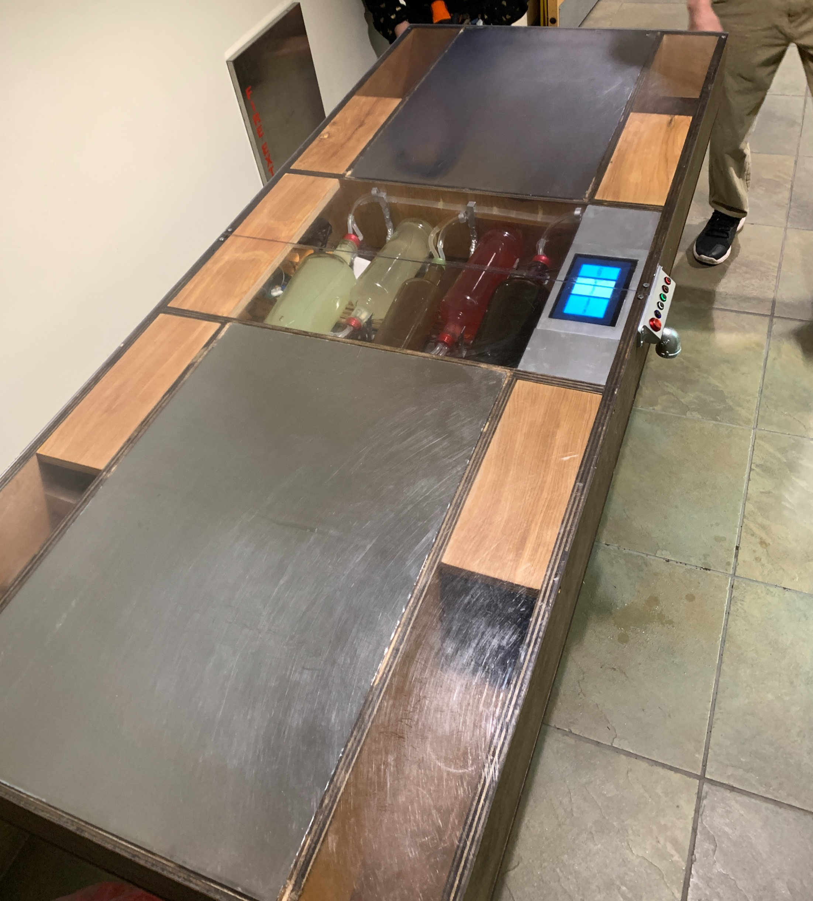
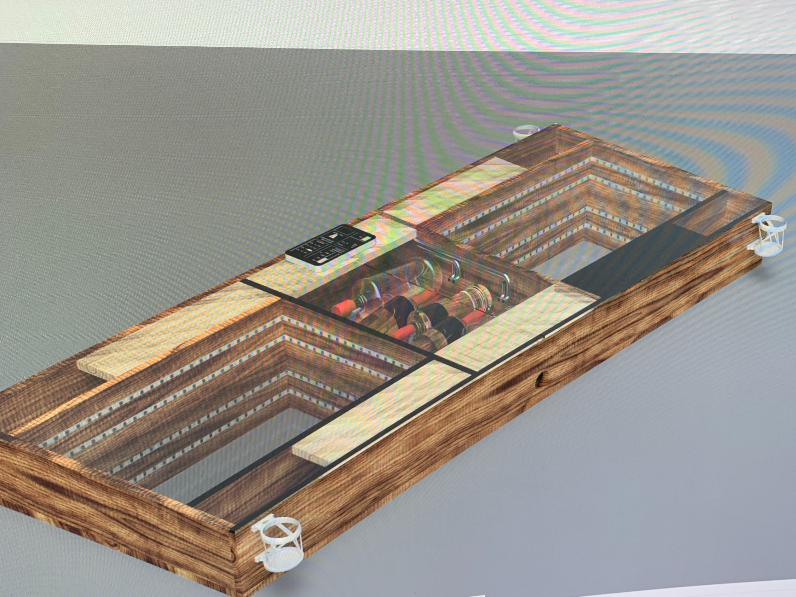
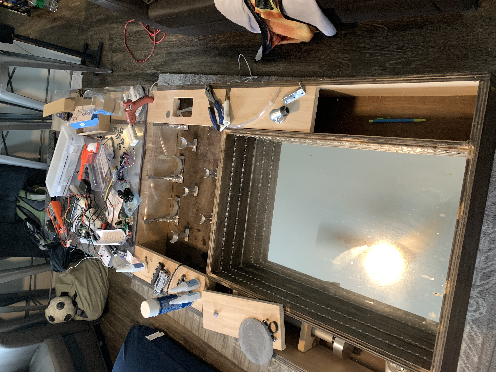
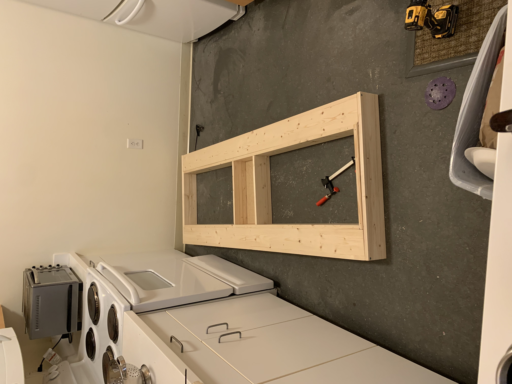
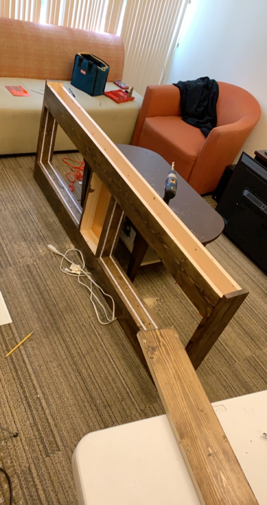
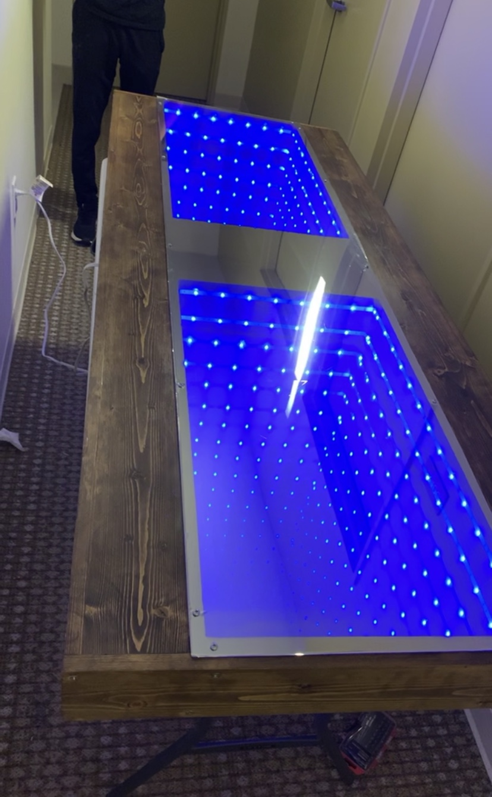
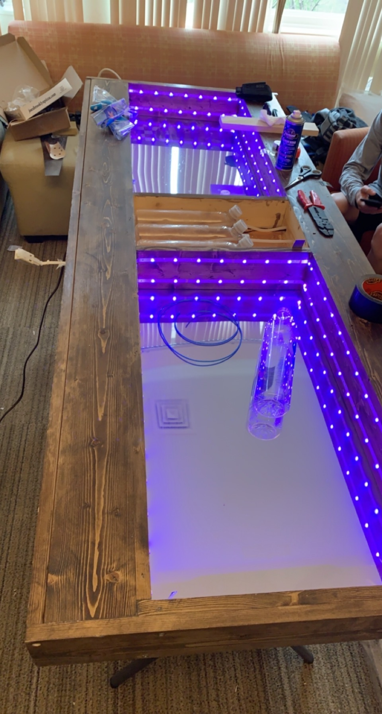
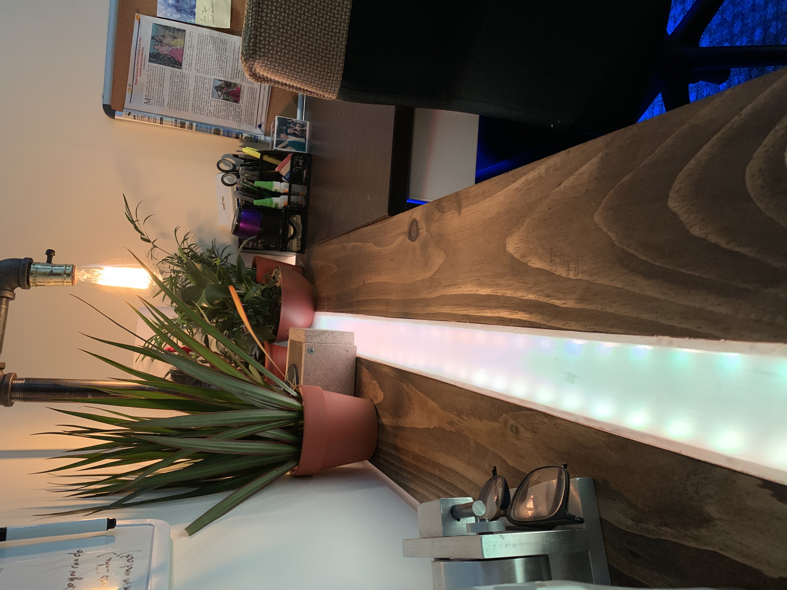
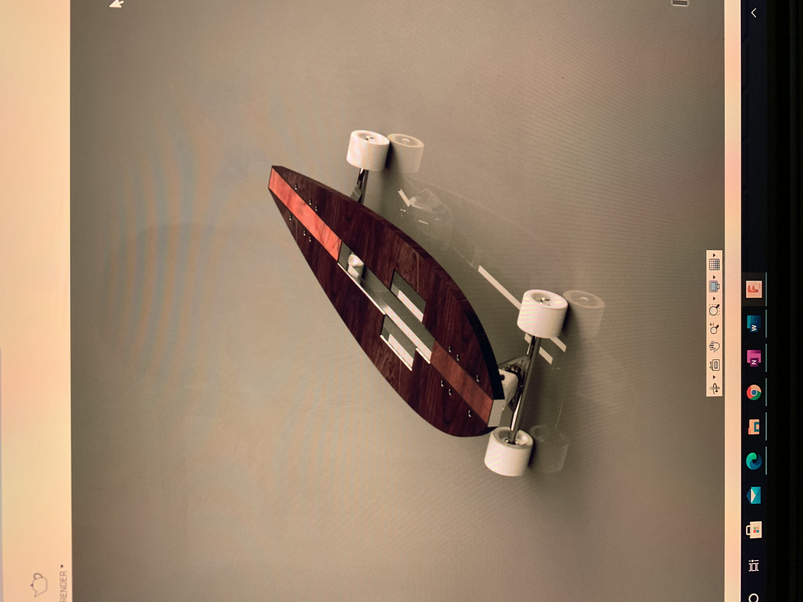
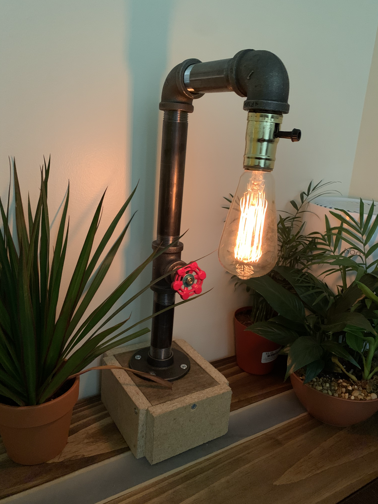

Structure
Wood frame, clear panels, internal component bays, and an infinity lighting floor.
Engineering Portfolio
Selected projects in mechanical design, fabrication, controls, furniture, lighting, and CAD.
RIT Senior Capstone
Infinity LED table with touchscreen controls, an integrated can crusher, and a five-bottle drink dispensing system.

Wood frame, clear panels, internal component bays, and an infinity lighting floor.
Five independently controlled bottles with tubing routed through the table body.
Touchscreen interface, Raspberry Pi control, custom PCBs, pumps, and wiring.
Fusion 360 CAD, resin 3D printed brackets, mirrors, plexiglass, and LED assemblies.
Mark 3
The capstone version stores up to 6 liters across five bottles and combines the lighting, dispensing, crushing, and control systems into one table.

Fusion 360 layout for the table structure, bottles, electronics, tubing, and internal clearances.

Wood, LEDs, mirrors, plexiglass, resin printed bottle brackets, and linear actuator installed.
Tubing, pumps, and the first electrical systems routed through the table.
User interface, screen, onboard computer, and additional electronics installed.
System testing for the lighting, dispensing hardware, controls, and assembled table.
Completed table presented with the internal systems visible through the top panels.
Mark 2
Previous version of the Infinity Entertainment Table with the lighting system, base table, and drink dispensing hardware.
Earlier version before the capstone redesign.

Initial table frame and internal layout.

Infinity lighting installed inside the table body.

Base table completed before the drink system was added.

Drink dispensing hardware added to the earlier table.
Completed and tested Mark 2 table.
Projects
Desk systems, control interfaces, CAD concepts, lighting, and fabrication work outside the capstone.
Furniture / interface
LED epoxy river desk with an integrated 7-inch touchscreen for PC monitoring, media controls, and lighting.
Arduino / voice control
Desk drinking-water dispenser controlled with Arduino and Alexa.
Competition / fabrication
Off-road vehicle frame hardware designed and fabricated with SolidWorks, mills, lathes, and MIG/TIG welding.

Furniture / lighting
Desk extension with lighting built into the surface.

CAD / product form
Longboard concept modeled in Fusion 360.

Lighting / electrical
Pipe-hardware lamp with an integrated dimmer switch.
Resume
Mechanical Engineer / Product Development / Mechanical Design
View resumeContact